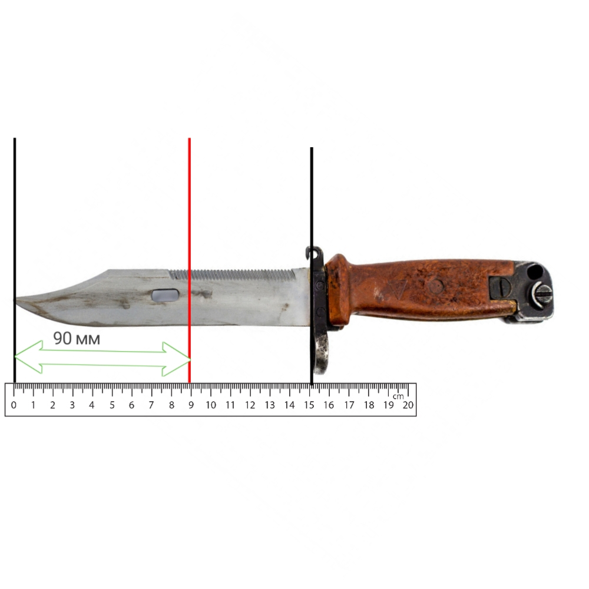
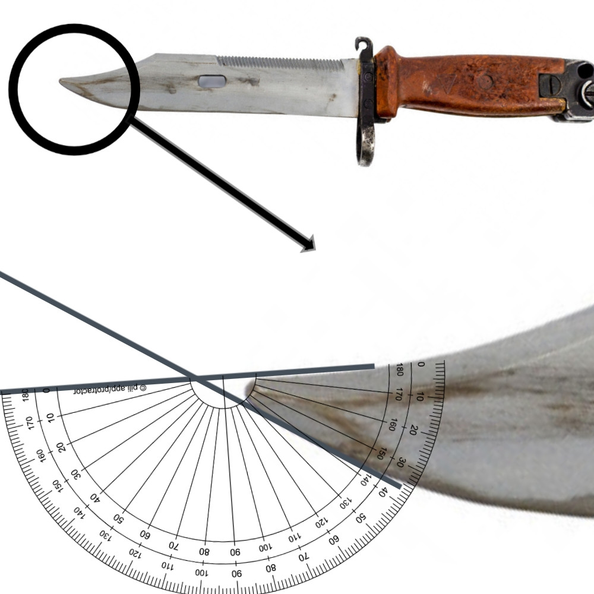
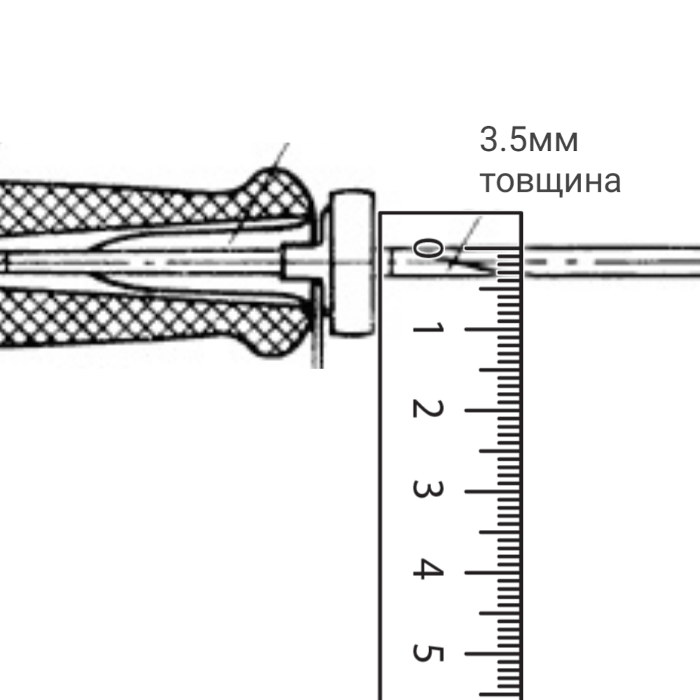
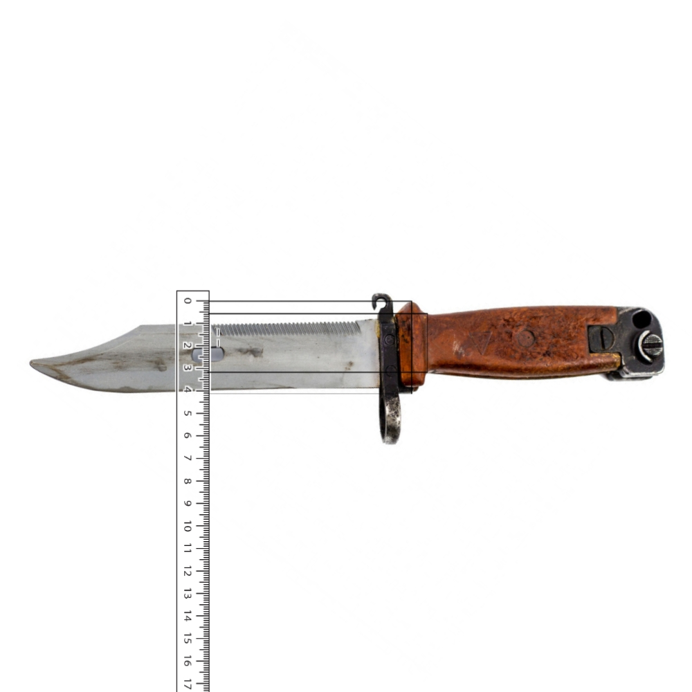
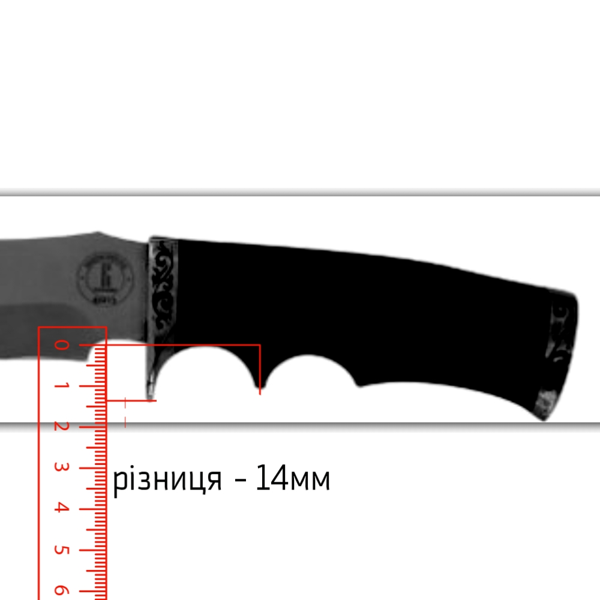
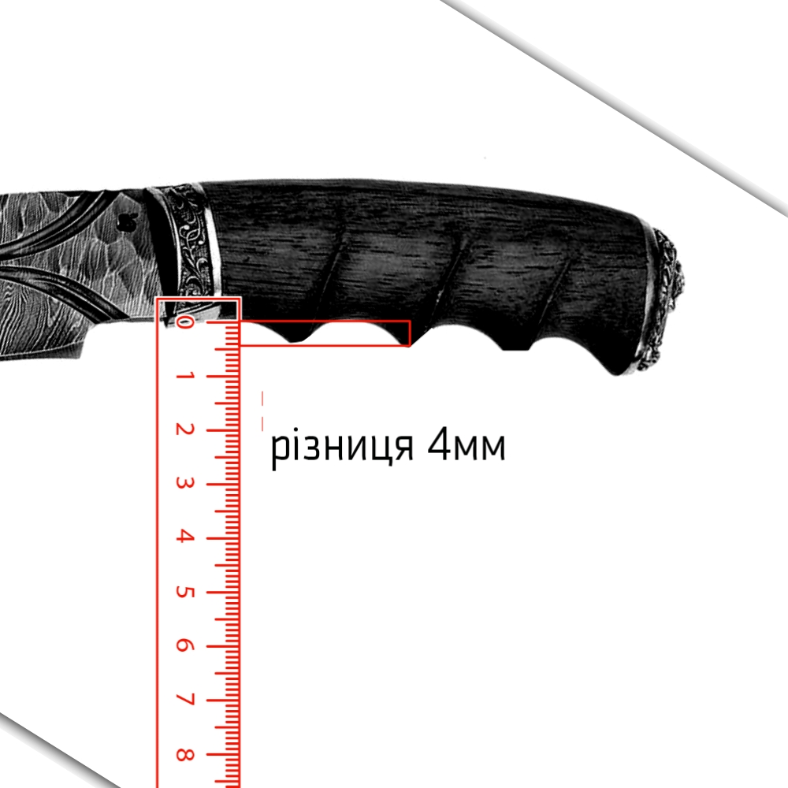
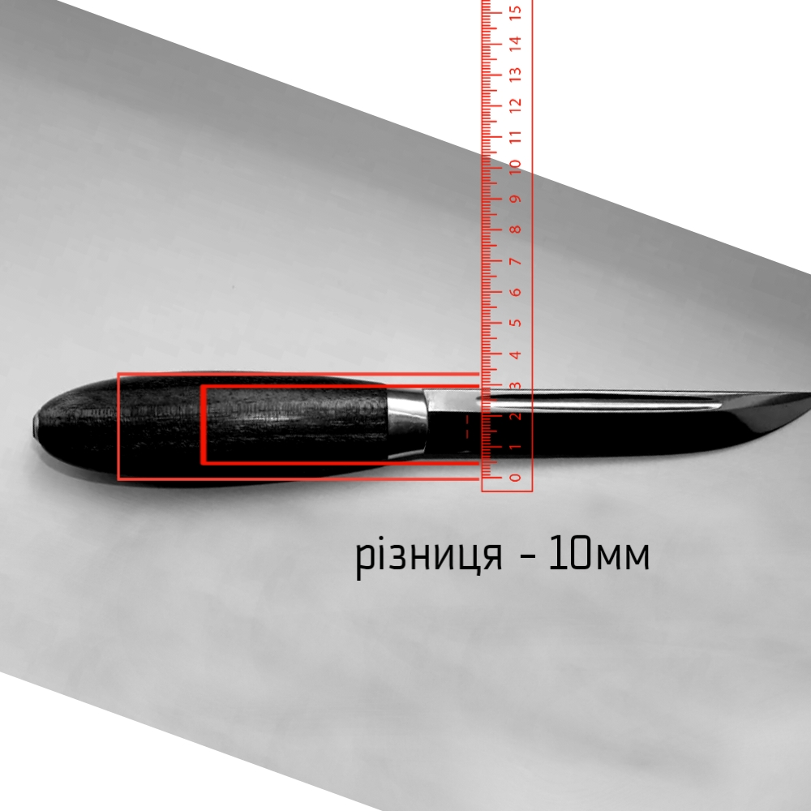

Чи можна носити при собі ніж?
про "носити при собі ніж" наше законодавство мовчить... але, забороняється носити при собі холодну зброю.
Стаття формувалась згідно інтерпретації документа: v1013342-10"Щодо Методичних рекомендацій криміналістичного дослідження холодної зброї та конструктивно схожих з нею виробів "
1.1. Холодна зброя - предмети, конструктивно призначені та придатні для неодноразового завдання тяжких (небезпечних для життя у момент спричинення) і смертельних тілесних ушкоджень (в подальшому - "ураження цілі"), дія яких заснована на використанні м'язової сили людини.
Носити з собою холодну зброю без належного дозволу - незаконно. Але, навіть з дозволом її потрібно зберігати в сейфі, або транспортувати при необхідності. Про правила транспортування зереестрованної холодної зброї в нашому законодавстві нічого не сказано, отже автоматично застосовується правила транспортування вогнепальної мисливської зброї, право на володіння якою дає право на володіння мисливським зареєстрованим ножем (який може бути холодною зброєю).
наказ МВС №622/12.13.
Під час перенесення або перевезення вогнепальна, травматична зброя має бути у розрядженому стані та знаходитися у спеціальному чохлі, кейсі, футлярі тощо.»
Отже і холодна зброя під час транспортування повинна знаходитись у розрядженому стані, і чохлі.
Наврядчи у вас вийде зарядити, щоб потім розрядити мисливський середньо-статистичний ніж, а розмістити його у чохол проблеми не складе. Таким чином можно спокійно транспортувати по місту пристібнувши на ремінь (Головне не обмовитись що ніж ви носите. Носити по місту холодну зброю заборонено! ви його транспортуєте з одного місця, в інше).
Що робити якщо дозволу на зброю у вас немає, а потреба при собі носити ніж є?
Далеко не будь-який ніж підпадає під визначення холодної зброї! Є ряд ознак які характеризують ніж як "холодний", в якості прикладу візьмемо штиковий ніж від АКМ "6X4" який є холодною зброєю.
обов'язкові властивості холодної зброї
1 довжина клинку
3.2.1. довжина клинку більше - 90 мм ; (Довжина клинків визначається вимірюванням відстані від вістря до обмежувача (утику руків'я) (гарди). в нашому випадку лезо довжиною 150мм 2 Зведення вістря
3.2.3. Ніж не може бути визначений як холодна зброя, якщо кут вістря клинка" перевищує 70 градусів.вістря клинка - кут сходження леза з обухом; прямі лінії для визначення кута проводяться через вістря і точки на лініях леза і обуха, віддалені від вістря на 10 мм).

3 Товщина клинку
3.2.2. товщина клинку більше - 2,4 мм ; (товщина вимірюється в найтовстішому місці клинка)у АКМ-овського ножа товщина 3.5 мм. 
4 Травмо-безпечне руків'я
Щоб ніж визнали "холодним", руків'я повинне забезпечити надійне утримання ножа в руці і запобігати її зісковзування на клинок при колячому ударі.забезпечується це за рахунок обмежувача "гарди", піідпальцевої виїмки, або специфічної форми руків'я.
Травмо-безпечність руків'я забезпечать такі елементи як:
-

3.2.4. Виступання обмежувача або утика (гарди) хоча б з однієї сторони над руків'ям – не менше 5 мм, і товщиною не менше 5 мм.
якщо виступи з обох боків, сумма їх довжини повинна бути на менш 5мм.
в нашому випадку упор складає на 14 мм відносно руків'я. якщо не враховувати кільце - фіксатор -

3.2.6. Підпальцева виїмка в руків'ї ножа, поглиблюється в руків'я на довжину 5 мм та більше,
або -

3.2.7. Підпальцевих виїмок в руків'ї ножа більше одної, то для того, щоб ніж задовольняв вимогам до холодної зброї, глибина поглиблення хоча б однієї цих виїмок повинна сягати 4 мм або більше.
-

3.2.8. Якщо руків'я має бочкоподібну або конусну (розширюється до клинку) форму і різниця по товщині між тонкої і товстої частиною рукояті перевищує 8 мм, то, при наявності інших ознак холодної зброї, такий ніж може бути визнаний "холодним'
5 твердість клинку
клинок може мати всі вище-згадані властивості, але при цьому бути признаним сувенірним у випадку недостатньо твердої сталі.3.2.3. мінімальна твердість клинку, що виготовлений із вуглецевістої сталі - не менш, як 50 HRC (при відсутності ДСТУ, якими встановлені інші значення твердості);
3.2.4. мінімальна твердість клинку, що виготовлений із корозійностійкої сталі - не менш, як 45 HRC (при відсутності ДСТУ, якими встановлені інші значення твердості);
відсутність будь-якої з вищеперерахованих властивостей роблять ваш ніж госаодарсько-побутовим виробом! наприклад: якщо ваш ніж має підпальцеві виємки, розвинутий упор-"гарду", довжину клинка більше 90мм, твердість вуглецевої сталі з якої зроблен клинок буде більше 50 по роквелу але при цьому товщина леза буде дорівнювати 2.4мм, або менша - виріб не є холодною зброєю!
властивості які виводять ніж з холодної зброї
якщо ваш ніж відповідає усім вимогам до холодної зброї, це не означає що він вже зброя!нижче властивості наявність однієї з яких виводить ніж з цієї категорії.